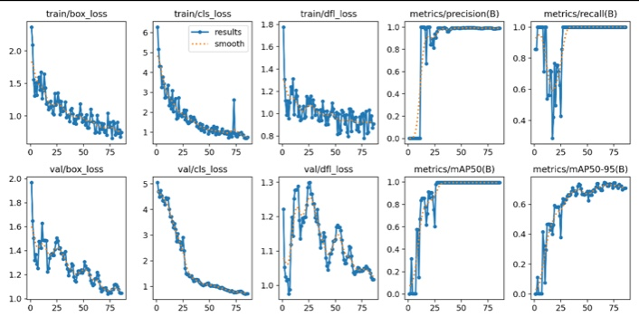
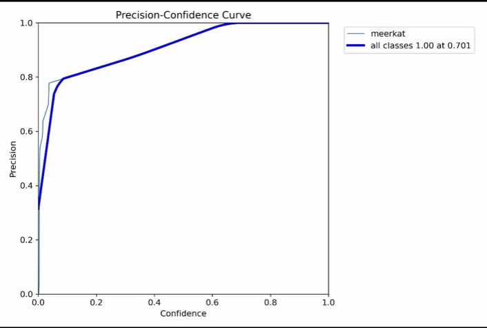

Кратко о проекте
Система выделяет сурикат на кадрах, сохраняет координаты рамок, оценивает положение животных и формирует таблицы для анализа поведения.
107
кадров подготовлено
214
размеченных объектов
1
класс модели: meerkat
1.00
precision при confidence ≈ 0.701
Визуальные результаты


Графики обучения


Алгоритм
- Загрузка видеоматериала.
- Извлечение кадров с заданным временным шагом.
- Разметка сурикат ограничивающими рамками в формате YOLO.
- Формирование обучающей и проверочной выборок.
- Обучение модели YOLO для класса
meerkat. - Детекция животных на кадрах и видео.
- Формирование таблицы координат рамок.
- Классификация поведения по положению, зоне обогащения и форме рамки.
- Агрегация результатов в этологическую таблицу.
Результаты
| Показатель | Значение |
|---|---|
| Кадров для анализа | 107 |
| Размеченных объектов | 214 |
| Класс модели | meerkat |
| Формат разметки | YOLO |
| Precision | 1.00 при confidence ≈ 0.701 |
Запуск
pip install -r requirements.txt
python src/01_extract_frames.py
python src/02_train_yolo.py
python src/03_analyze_video.py
python src/04_ethogram_table.py